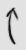
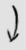
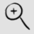
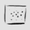

Scanning options
Status
Monitoring
Up for 10 minutes
Channel setting
all
1
2
3
4
5
6
7
8
9
10
11
12
13
14
1,6,11
1,3,6,8,11
1,3,6,8,11,14
1 to 11
1 to 14
Display options
Show/Hide
AP - Unsecured
AP - Encrypted
Clients - Conn'd
Clients - Searching
Effects
Rotate slowly
Show grid
Smooth animation
Blending effects
Scaling
Fly in on click
Details
Nothing here yet
Please select a host to view details.
Network Actions
Join this network
AP Actions
Join via WDS
Copy this AP's settings
Foreign-client actions
Spy on this client
Unblock this MAC
Local-client actions
Disconnect this client
Block this MAC
Set DHCP static IP
OpenWRT actions
Web configuration
Join a network
AP settings
Client spy
Content
Content
badger
badger
badger
badger
badger
badger
mushroom?
Local Configuration
Actions
Select this router
Commit NVRAM changes
Radio Settings
SSID:
Channel:
Encryption:
Open
WEP
Don't change
Key (blank=unchanged):
Mode:
Access point
Client mode
Don't change
By Nate True
Powered by DD-WRT